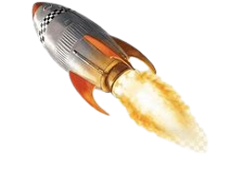

planète de notre système solaire
La liste des planètes de notre système solaire
Liste des planètes de notre système solaire et les informations sur chaque planète.
Live sur l'espace depuis l'ISS
La liste des vaisseaux les plus connus qui ont volé

- Voyager 1 - Détails...
- Appolo 11
- L ISS
- Soyuz
- Ariane 5
- Space Ship
Quelques informations sur lespace
- Définition de lespace
- Quelle est sa taille ?
quelque information sur l'iss

- quesque veut dire l'anagrame iss
- a quoi nous sert l'iss
- a qui appartient l'iss
- video de présentation de l'intérieur de l'iss